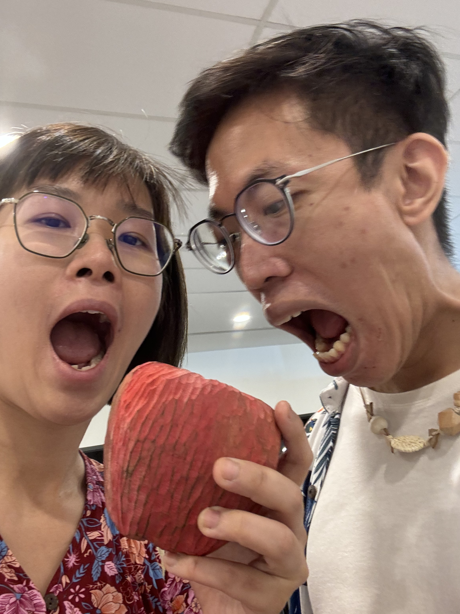

Documenting our journey together üë´
Questions üîé
- When did you first realise you had feelings for me?
HL: Slowly grew on each other
ZM: Same, but I had a hunch from the start - Describe yourself in 3 words. Get your partner to do the same for you!
Prompt:
How has your impression changed as the relationship progressed?Hui Ling Zhe Min Hui Ling Fuss-free, meticulous, self-reliant Smart, happy, reliable Zhe Min Sensible, affectionate, genuine Goofy, playful/naughty, shy - What are the 3 most important values in your life?
Partner Life Hui Ling Honesty, Kindness, Tolerance Integrity, Kindness, Freedom Zhe Min Honesty, value of hard work/put in effort, softness/kindness -
What are some red flags for you in a relationship?
HL: Dishonesty, cheating
ZM: Lack of integrity, controlling -
Tell your partner your weirdest habit, or the weirdest experience you've ever encountered.
-
Is religion important to you? Why or why not?
HL: Feel an affinity to the Christian notion of God, but not critical in life or relationship.
ZM: Appreciates the notion of virtue ethics in religion, am agnostic, and open to religion in family/children, but don't believe. -
Here are 3 things I can go on for hours about:
- _ _ _ _ _
- _ _ _ _ _
- _ _ _ _ _
HL: Supply Chain, Travelling, Food
ZM: Tech, Psychology, Current Affairs -
In your opinion, what are some boundaries that cannot be crossed?
HL: Physical violence, cheating
ZM: Maybe butt stuff -
What are some things you wish to accomplish in life?
Rank them in priority.HL: Completing my MBA, travelling to different parts of the world
ZM: Fulfilling career in tech, incorporating art into life/work
Activities üïπ
- Show your partner your favourite photo of them.
Explain why it's your favouriteHL:
ZM:

- Understanding your partner's personality is crucial in understanding their inclinations!
Do the Myers-Briggs personality quiz together!
HL: ENTP
ZM: ENFP -
Do a random act of kindness for a stranger this week.
HL: Helped 2 strangers find their way around South Beach/Suntec.
ZM: Gave up his seat in the break room for people having their dinner. -
How does your partner prefer to receive love?
Do the 5 love languages quiz together!
Bonus: Do something nice for your partner this week that speaks to their love language. -
Create a secret code that stays between the both of you for different occasions.
For example:
- When you want to leave a gathering early: "I left the kettle on at home"
- When you are feeling angry and want to press pause on the conversation: "Alligator"XiaoLongBao
-
Come up with a theme you need to list 5 things for. Be creative and don't be afraid to get silly!
For example:
- What 5 things do you want to eat for breakfast this month?
- What 5 things made you smile the past week?
5 interesting things we are going to do while we're away from each other this coming week? -
What is your favourite thing to do to unwind?
Spend a day this week doing that activity together!HL: Wine and dine üç∑üçù
ZM: Sports and outdoors/nature üè∏üåª
31 Oct ❤️ -
Be each other's personal photographer for the day!
Plan a photo-spot hunt together.Results from Affordable Art Fair and Clay Makers' Market:



-
Let your partner understand a day in your life! Walk them through your typical day, and share what excites you most (or least) as you go through it.
HL: Work spiel (routine, slow, boss)
ZM: Work spiel (routine, projects,)